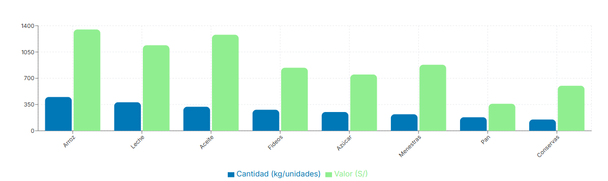
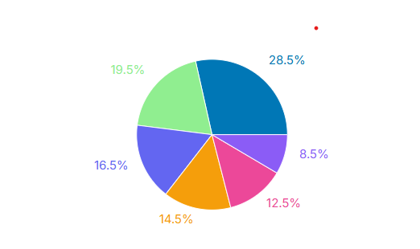
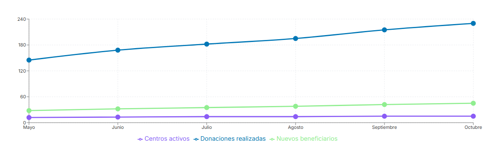

Donaciones Totales
12
S/ 1484.00
Usuarios Activos
2,100
+15% este mes
Centros Activos
12
1490 beneficiarios
Tasa de Éxito
98%
Muy satisfactorio
Donaciones por Tipo de Producto
Distribución de productos más donados
Donaciones por Región
Distribución geográfica de donaciones en San Juan de Lurigancho
- Zona 1 - Canto Grande 285
- Zona 2 - Zárate 195
- Zona 3 - Canto Rey 165
- Zona 4 - Las Flores 145
- Zona 5 - Mariscal Cáceres 125
- Zona 6 - Bayóvar 85
Frecuencia de Donaciones
Tendencia de donaciones en los últimos 6 meses
Exportar Reportes Detallados
- Reporte Completo de Donaciones
- Reporte de Usuarios y Actividad
- Reporte Financiero Mensual
- Reporte de Centros de Beneficio
Resumen del Período
- Total donado este mes S/ 519.40
- Familias beneficiadas 850+
- Centros más activos 12
- Crecimiento mensual +18.5%
- Donaciones completadas 45
- Tasa de éxito 98%